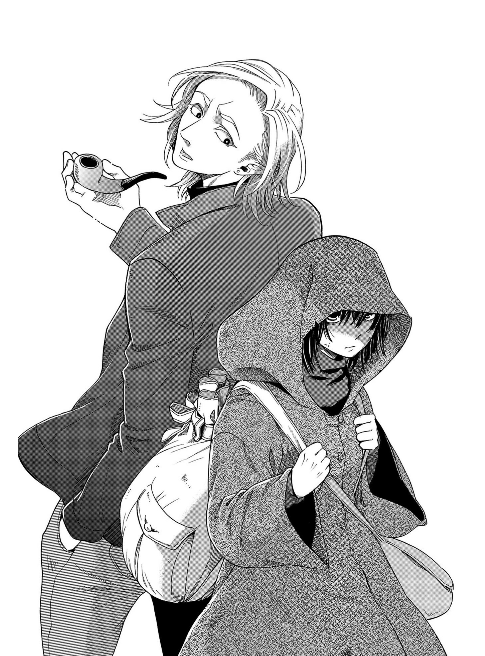
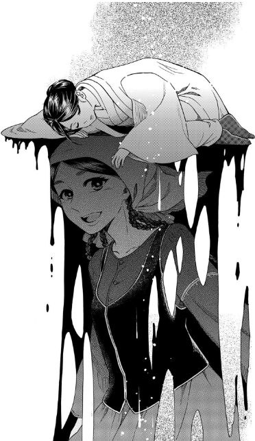

Collection of Short Stories
Defender and Ash

Defender and Ash is a short story that focuses on the story sisters Alex and Ashley. Both sisters are born with the double edged sword that is the ability to wield magic. This however, is a taboo among humans and as a result, the sisters are outcast as witches even by their own family. This is until eventually, a sorceress comes along and offers them an apprenticeship. The twist is that she would only accept one of them as an apprentice and in a move that revealed the sisters' ambition, Ashley accepted the position even if it meant that her sister would be left alone. Fast Forward several years and Alex remains a self-taught mage while Alex has passed away. Due to her sister's decision, Alex develops a grudge of envy against her sister. One fateful day, Alex sends a letter to Ashley, falsely telling her to find her in a cursed forest which no one has managed to escape alive from. Ashley dies and Alex feels the guilt and burden of her sister's death. In search for self-redemption, Alex ventures into the forest and along the way she meets the Gancanagh, a dubious creature disguised in the form of a human. He draws women in and makes them fall in love with him until finally killing them. After an enduring struggle, Alex and the Gancanagh manage to defeat the forest and liberate all its trapped souls, including that of her own sister. The Gancanagh becomes Alex's familiar and takes on the name of Defender while Alex decides to make her burden part of her own self by renaming herself, Ashley.
The Sun and the Dead Alchemist

This short story is about Iron Rust. Iron Rust's current body is female and one day, she decides to visit Elias and Chise to bring them a gift to commemorate their marriage. Upon her arrival, Elias is immediately suspicious of Iron Rust as it turns out that both of them have a past history. Iron Rust warns Elias of losing his own Sleigh Beggy. As it turns out, Iron Rust or the Dead Alchemist as Elias calls her, had a Sleigh Beggy. Driven by blind ambition to become a mage, Iron Rust consumes the Sleigh Beggy who went by the name of Uruk. Iron Rust was in love with her but ambtion proved to be more predominating than love. Iron Rust's true form is that of a black mud that disguises itself within Uruk's body. Iron Rust warns Elias of committing the same mistake as he/she once did and expresses regret over past actions.
I chose these two stories because they are my personal favorites but if you're interested in what other people have to say check this out: The Golden Yarn Review
Home Page
About The Ancient Magus' Bride
The Golden Yarn Stories
My purpose